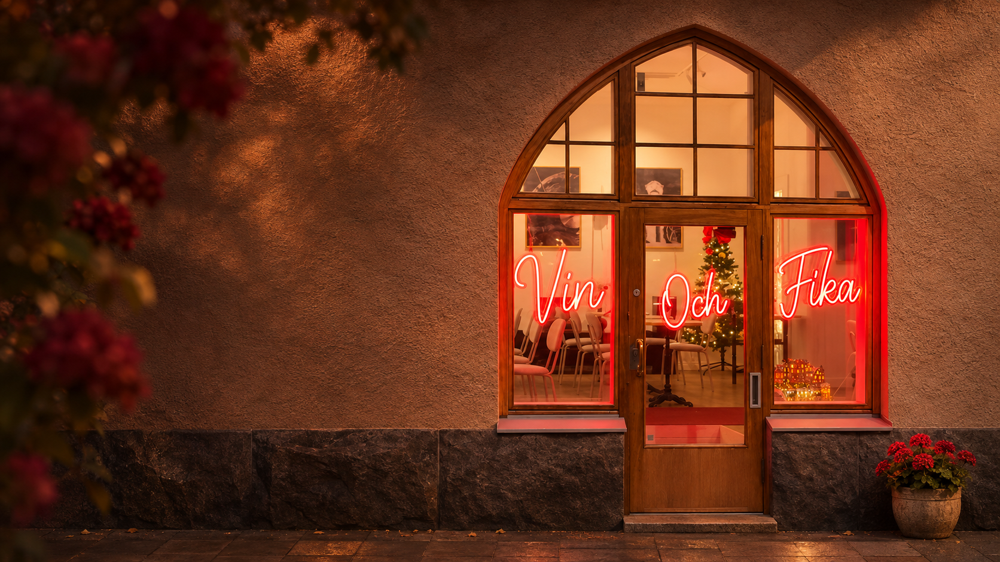

A Wine &
Fika Bar
in Helsinki
Swedish fika, buttery croissants and carefully selected wines.

On Pietarinkatu
Come in from the street
Look for three words in red neon, then push open the wooden door. Inside, coffee comes in flowered cups. There’s room on the marble table for a croissant, a second glass and whatever you’ve been meaning to tell a friend.

Our menu
Coffee, crumbs
& a glass of wine
A croissant leaves a few flakes on the saucer. A cappuccino takes care of the rest. If you’re staying for wine, ask us what’s open.
Explore the menu
Events
An evening
around wine
At a tasting, the best question is often the simplest. Which glass would you pour again? Join us for an evening of tasting and talking, or get in touch about bringing your own group.
Upcoming evenings
Visit us
Pietarinkatu 16 A
Helsinki
- Mon–Thu
- 8:00 AM – 10:00 PM
- Fri–Sat
- 8:00 AM – 11:00 PM
- Sun
- 9:00 AM – 8:00 PM